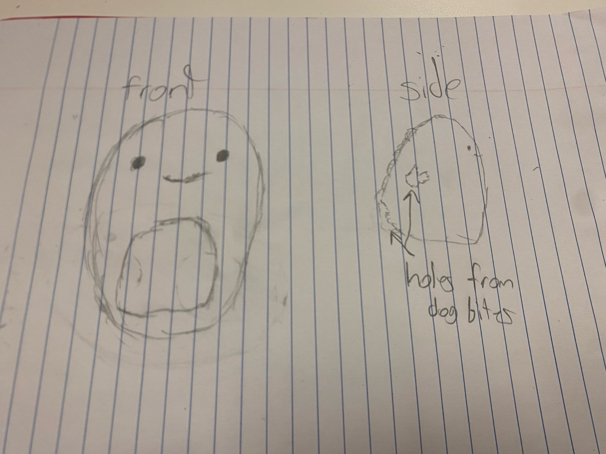
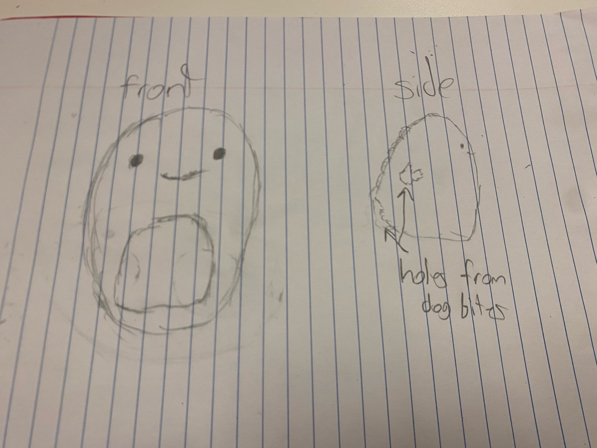

Item of the week: Dinosaur Plushie
 

Descrption
The dinosaur plushie was a gift a long time ago from a good friend of mine. The plushie unfortunately has endured a lot of wear and tear so it's become a bit unfortunate that I have to throw it out. However, it's not as if it's completely ruined and I think donating it for someone to use a cute little plushie to have in their room is the right call.
The plushie is very soft ... sort of like the Squishmallows ...
It’s more of a weekly inventory of small decisions: what I keep, what I replace, and what I hold onto for reasons that aren’t practical.
Anecdote
This tiny plushie has been a member of stuffed plushie collection along side a sloth and another variety of animals. However, last thursday I realized how worn and torn it's become and that it no longer has the meaning it used to, but j... just throwing it out felt cruel. I started thinking about textile recycling or regifting it instead.
I decided to do something good with the plushie if I were to remove it from my collection instead, so I will regift it to another person who wants it and deserves it
Fun Facts
Fun Fact #1
Most plushies are stuffed with polyester fiberfill (often called Poly-Fil), because it’s lightweight, washable, and holds shape pretty well. The downside is that polyester fiberfill is plastic-based, so it doesn’t break down like natural fibers. (Source)
Fun Fact #2
In the U.S., many toys are expected to meet the ASTM F963 toy safety standard, but not every section applies to every toy. Manufacturers are supposed to figure out which parts of the standard match their specific product (like small-parts or mechanical hazards). (Source) (Source)
Fun Fact #3
Stuffed animals usually can’t go in normal curbside recycling, but some textile recycling drop-offs accept them as fabric-based items. New York City’s sanitation guidance even lists “stuffed animals” as something some textile recycling sites may take. (Source) (Source)